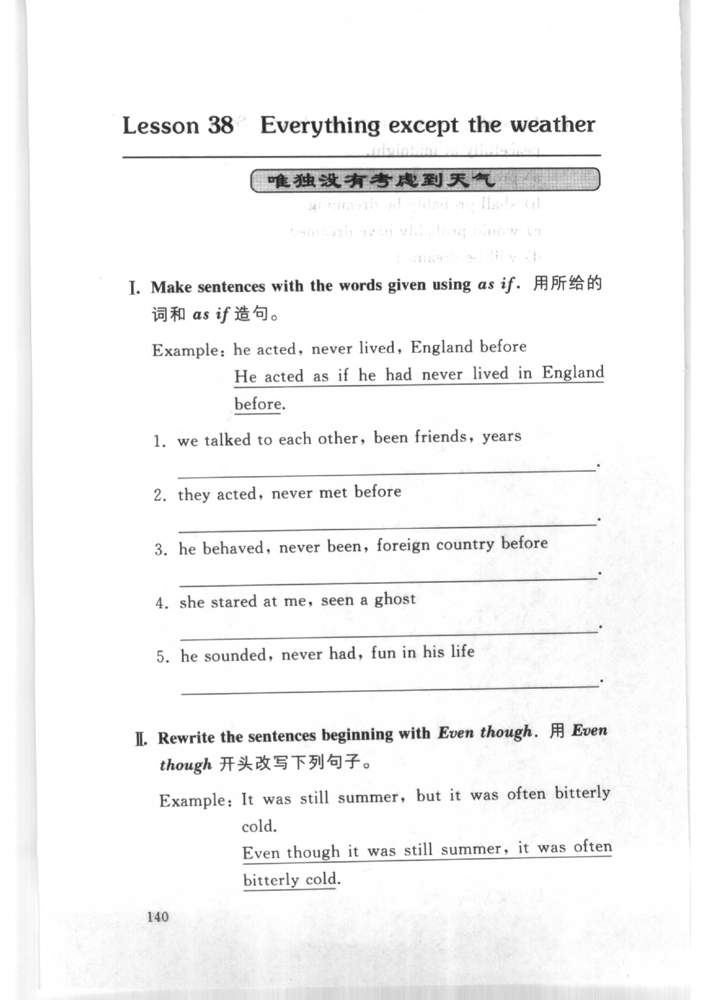
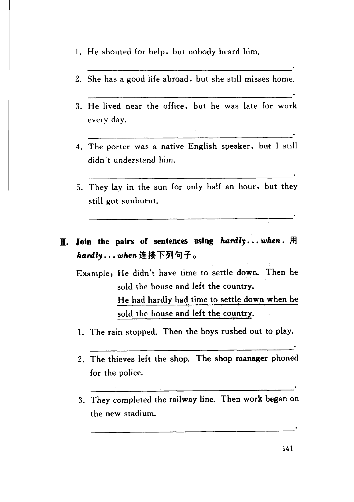
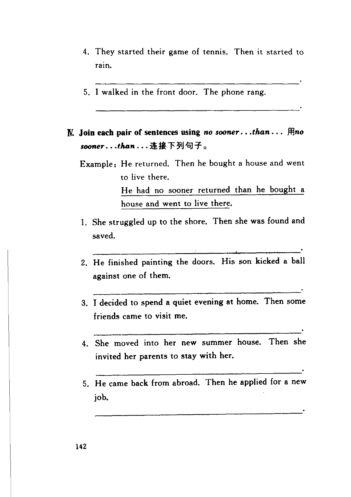

Grammar exercises · 语法练习
I. Make sentences with the words given using as if.
用所给的词和 as if 造句。
Example: he acted, never lived, England before
He acted as if he had never lived in England before.
-
I. as if — we talked to each other, been friends, years
-
I. as if — they acted, never met before
-
I. as if — he behaved, never been, foreign country before
-
I. as if — she stared at me, seen a ghost
-
I. as if — he sounded, never had, fun in his life
II. Rewrite the sentences beginning with Even though.
用 Even though 开头改写下列句子。
Example: It was still summer, but it was often bitterly cold.
Even though it was still summer, it was often bitterly cold.
-
II. Even though — He shouted for help, but nobody heard him.
-
II. Even though — She has a good life abroad, but she still misses home.
-
II. Even though — He lived near the office, but he was late for work every day.
-
II. Even though — The porter was a native English speaker, but I still didn't understand him.
-
II. Even though — They lay in the sun for only half an hour, but they still got sunburnt.
III. Join the pairs of sentences using hardly...when.
用 hardly...when 连接下列句子。
Example: He didn't have time to settle down. Then he sold the house and left the country.
He had hardly had time to settle down when he sold the house and left the country.
-
III. hardly...when — The rain stopped. Then the boys rushed out to play.
-
III. hardly...when — The thieves left the shop. The shop manager phoned for the police.
-
III. hardly...when — They completed the railway line. Then work began on the new stadium.
-
III. hardly...when — They started their game of tennis. Then it started to rain.
-
III. hardly...when — I walked in the front door. The phone rang.
IV. Join each pair of sentences using no sooner...than...
用 no sooner...than... 连接下列句子。
Example: He returned. Then he bought a house and went to live there.
He had no sooner returned than he bought a house and went to live there.
-
IV. no sooner...than — She struggled up to the shore. Then she was found and saved.
-
IV. no sooner...than — He finished painting the doors. His son kicked a ball against one of them.
-
IV. no sooner...than — I decided to spend a quiet evening at home. Then some friends came to visit me.
-
IV. no sooner...than — She moved into her new summer house. Then she invited her parents to stay with her.
-
IV. no sooner...than — He came back from abroad. Then he applied for a new job.
Original images · 原图对照
Expand a page to compare it with the transcription. Open the original in a new tab to zoom in.
展开原图核对文字，也可以在新标签页打开原图放大查看。
Book page 140 · Exercise I (as if) and Exercise II (Even though, example)
Open original · 打开原图 ↗ Download original · 下载原图


Book page 141 · Exercise II (Even though, items 1–5) and Exercise III (hardly...when)
Open original · 打开原图 ↗ Download original · 下载原图


Book page 142 · Exercise III (hardly...when, items 4–5) and Exercise IV (no sooner...than)
Open original · 打开原图 ↗ Download original · 下载原图


Your notes and answers
Use this space for longer responses or exercises that do not have an individual answer box.